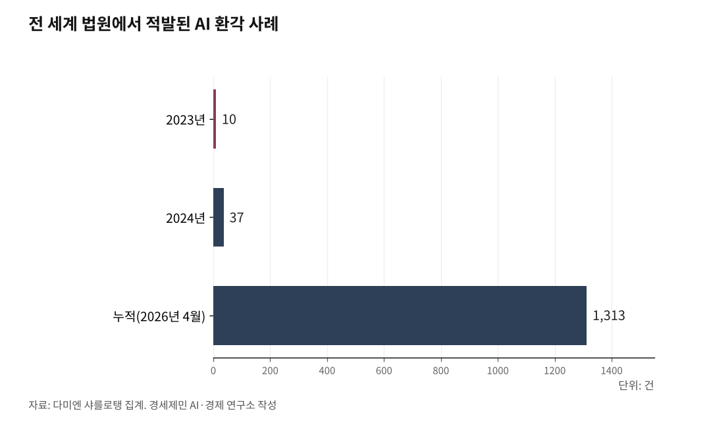

[AGI시대 지역언론④] AI 기사 시대, 저널리즘 원칙 지키는 세 기둥
한국일보 2024년 4월 국내 최초 '생성형 AI 활용 준칙' 공표
취재 메모는 외부 AI에 넘기지 않는다
챗지피티로 보도자료를 기사로 바꾸는 과정을 영상으로 공개했다. 클로드와 챗지피티4o로 뉴스 브리핑도 만든다.
AI가 기사를 쓰면 무엇이 달라지나. 빨라진다. 그리고 위험해진다.
1. 존재하지 않는 책을 추천한 신문
2025년 5월 미국 시카고선타임스와 필라델피아인콰이어러에 여름 독서 목록이 실렸다. 킹피처스신디케이트가 제공한 특별 부록이었다.
유명 작가 이름은 진짜였다. 칠레계 미국 작가 이사벨 아옌데가 쓴 '조수의 꿈(Tidewater Dreams)'이라는 소설이 추천 목록에 올랐다.
아옌데는 20편 넘는 소설을 썼다. 그러나 '조수의 꿈'은 쓰지 않았다.
AI가 만들어낸 가짜 책이었다. 목록에 실린 책 대부분이 세상에 존재하지 않았다.
글을 쓴 마르코 부스카글리아는 AI를 써서 목록을 만들었다고 인정했다. 사실 확인을 하지 않았다.
킹피처스신디케이트는 부스카글리아와 계약을 해지했다. AI 사용 금지 규정을 어겼다는 이유였다.
두 신문 편집국은 "부록 제작에 관여하지 않았다"고 해명했다. 그러나 광고 표시도 없이 신문에 실렸다. 독자는 신문이 추천한 책이라고 믿었다.

2. 법정에서도 가짜가 통했다
2023년 6월 미국 뉴욕 남부지방법원. 변호사 스티븐 슈워츠가 챗지피티로 소송 서면을 작성했다. 인용한 판례 6건이 모두 가짜였다.
케빈 카스텔 판사는 5000달러 제재를 부과했다.
2025년 5월에는 미국 대형 로펌 케이앤엘게이츠와 엘리스조지 소속 변호사들이 3만1100달러 제재를 받았다. 10쪽 서면에 담긴 법률 인용 27건 가운데 9건이 틀렸고, 2건은 아예 존재하지 않는 사건이었다.
법률 자료 분석가 다미엔 샤를로탱 집계를 보면, 2026년 4월 기준 전 세계 법원에서 적발된 AI 환각 사례는 누적 1313건이다. 2023년 10건, 2024년 37건이던 것이 2025년부터 급증했다.
신문 독서 목록에서, 법정 서면에서, AI는 같은 일을 했다. 사실이 아닌 정보를 사실처럼 만들어냈다. 확인하지 않은 사람이 그대로 냈다.
3. 한국일보가 가장 먼저 움직였다
한국일보는 2024년 4월 4일 국내 언론사 가운데 처음으로 '생성형 AI 활용 준칙'을 공표했다. 이성철 사장과 유환구 노조위원장이 조인식을 열었다. 전문 8개조 20개항이다.
"인간의 관여와 감독 없이는 AI로 생성한 뉴스를 보도하지 않는다." 준칙 제1원칙이다. 사실 확인은 반드시 기자가 한다. 창의적 글쓰기를 AI로 대체하지 않는다.
인천투데이는 같은 해 9월 11일 자체 준칙을 제정했다. 전문 12개조다. "AI는 인간 기자를 대체하는 것이 아니라 보조하고 확장하는 도구"라고 제1조에 못 박았다.
12월 5일에는 한국신문협회·한국방송협회·한국기자협회 등 6개 단체가 공동 준칙(전문 10개조)을 만들었다. 8개월 만에 개별 언론사에서 업계 공동 원칙으로 확대됐다.
4. 확인하지 않으면 가짜가 기사로 나간다
인천투데이 준칙 제3조는 "AI 생성물은 검증되지 않은 정보로 간주하며, 기자가 사실 확인을 위해 노력해야 한다"고 정했다.
시카고선타임스 독서 목록 사건이 보여주는 교훈이 이것이다. 부스카글리아는 AI가 만든 책 제목을 검색해보지 않았다. 검색 한 번이면 가짜인지 알 수 있었다.
AI가 "이사벨 아옌데의 신작 '조수의 꿈'"이라고 내놓으면 기자는 출판사 목록을 확인한다. AI가 "2024년 인천 GRDP 117조 원"이라고 내놓으면 기자는 통계청 원자료와 대조한다. AI가 제시한 URL이 실제로 존재하는지 클릭해본다.
2026년 1월 22일 시행된 AI 기본법 제31조는 생성형 AI 결과물에 표시 의무를 부과한다.
5. 취재 메모를 외부 AI에 넣으면 어떻게 되나
인천투데이 준칙 제6조는 "민감한 개인정보나 기밀정보를 AI에 입력하지 않아야 한다"고 정했다. 제8조는 "AI 개발사 등 협력업체에 개인정보나 기밀이 유출되지 않게 보안 대책을 적용한다"고 명시했다.
기자가 취재 메모를 챗지피티에 붙여넣는다. "이 내용 요약해줘." 편하다.
그런데 그 메모가 AI 학습 자료로 쓰일 수 있다. 취재원이 "이건 비보도 전제(off the record)로 하는 말인데"라고 한 내용이 AI 학습 자료에 섞이면 취재원 보호가 무너진다.
대안은 사내 자체 서버다. 카나나 1.5-2.1B 같은 공개 모델을 사내 PC에 설치하면 취재 자료가 외부로 나가지 않는다.
요약이 필요하면 사내 AI에 돌린다. 결과를 기자가 확인한다. 외부 AI에는 넘기지 않는다.
참고문헌
· 한국일보, "[알립니다] 한국일보 생성형 AI 활용 준칙 제정", 2024.4.4., https://www.hankookilbo.com/News/Read/A2024032813480004813
· 한국일보, "[알립니다] 한국일보와 대화해보세요… 'H.AI 대화형 검색' 오픈", 2025.9.16., https://www.hankookilbo.com/News/Read/A2025091512080005337
· 인천투데이, "인투아이(INTO-AI)기자가 기사 쓰는 법 전격 공개!", 2024.1.21., https://www.incheontoday.com/news/articleView.html?idxno=239717
· 인천투데이, "인천투데이, 생성형 AI 활용 윤리강령과 보도준칙 제정", 2024.9.12., https://www.incheontoday.com/news/articleView.html?idxno=253103
· 인천투데이, AI 활용 윤리와 보도준칙 전문, https://www.incheontoday.com/com/com-7.html
· 미디어오늘, "인천투데이, 인공지능 활용 윤리강령·보도준칙 제정", 2024.9.16., https://www.mediatoday.co.kr/news/articleView.html?idxno=320921
· 한국기자협회, "언론을 위한 생성형 인공지능(AI) 준칙", 2024.12.5., https://www.journalist.or.kr/news/section4.html?p_num=24
· 「인공지능 발전과 신뢰 기반 조성 등에 관한 기본법」, 법률 제20676호, 2025.1.21. 제정, 2026.1.22. 시행
· "10 famous AI disasters", CIO, 2025.12.17., https://www.cio.com/article/190888/5-famous-analytics-and-ai-disasters.html
· Damien Charlotin, AI Fake Cases tracker, 2026.4.13.
※ 이 기사는 AI 프로그램 클로드를 활용해 작성했습니다.
사진 출처
· [대표사진] Twzink, "Group of Newspaper Vending Machines.jpg", 위키미디어 공용, CC0, https://commons.wikimedia.org/wiki/File:Group_of_Newspaper_Vending_Machines.jpg
※ 이 기사는 인공지능을 활용해 작성했습니다.
관련기사
- [AGI시대 지역언론③] 350만원에서 시작하는 지역언론 AI 서버
- [AGI시대 지역언론①] 자체 AI서비스 가능 조건은 서버
- [AGI시대 지역언론②] 빅카인즈 API 연동, 별도 비용 없이 AI 검색 개통
- [AGI시대 지역언론⑤] 오픈소스로 열린 지역언론 AI, 재원 구조가 발목
저작권자 © AI경세제민 무단전재 및 재배포, AI학습 및 활용 금지